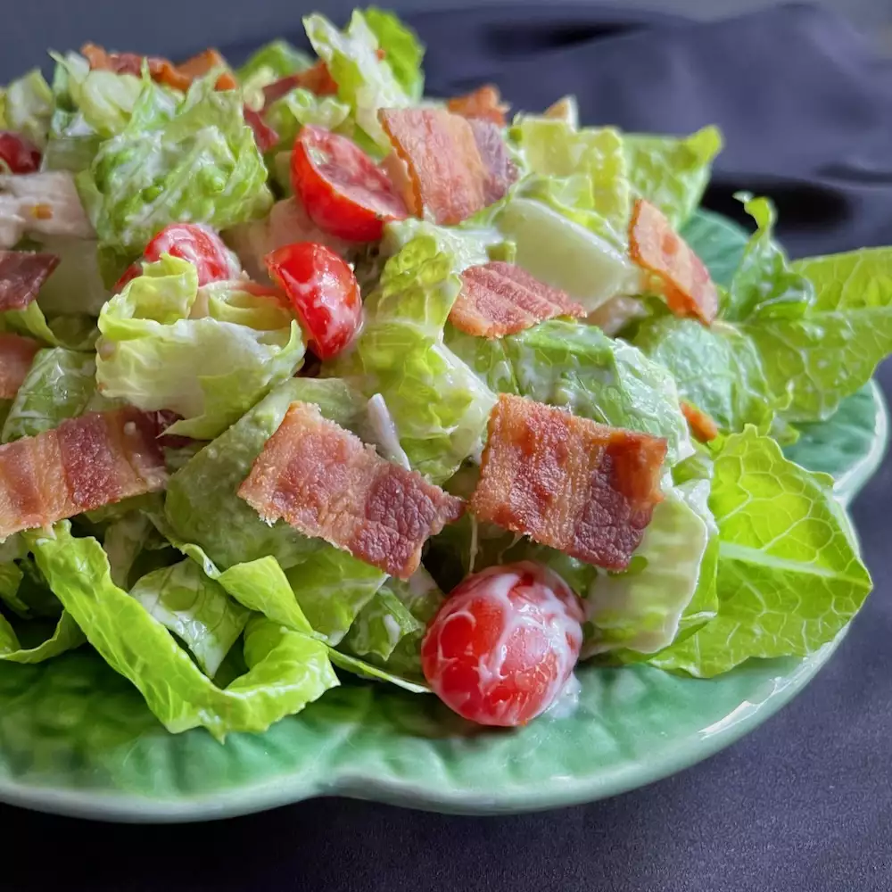

Chicken Bacon Ranch Salad!

Description
Now it seems that our cookbook is missing something a bit on the healthier
side, so here we have the perfect chicken bacon ranch salad. It's
simple and easy, and you never get tired of it!
Ingredients:
- 8 leaves romaine lettuce
- 2 cups chopped romaine lettuce
- 1/2 cup chopped cooked chicken
- 1/2 cup chopped avocado
- 1/2 cup cherry tomatoes, halved
- 2 tbsp prepared ranch dressing
- salt and freshly ground black pepper to taste
- 2 slices cooked bacon, crumbled
Steps:
- Line a salad plate with small romaine lettuce leaves.
- Combine chopped romaine, chicken avocado, and tomatoes in
a large bowl. Add ranch dressing, salt, pepper, and toss to combine.
- Serve salad on the prepared plate, top with crumbled bacon.